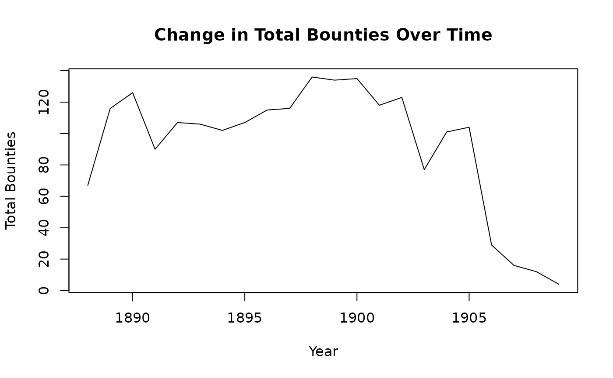

A dataset containing the historical record of the Thylacine bounty numbers submitted across the Tasmanian study region, and for each of the nine Interim Bioregionalisation of Australia (IBRA) bioregions for Thylacine example vignette.
Format
A data frame with 22 rows and 11 variables:
- Year
Year during bounty period from 1888 to 1909
- Total
Total Tasmania-wide bounty submitted
- FUR
Bounty submitted in IBRA bioregion: Furneaux
- BEN
Bounty submitted in IBRA bioregion: Ben Lomond
- TNM
Bounty submitted in IBRA bioregion: Tasmanian Northern Midlands
- TSE
Bounty submitted in IBRA bioregion: Tasmanian South East
- TW
Bounty submitted in IBRA bioregion: Tasmanian West
- TNS
Bounty submitted in IBRA bioregion: Tasmanian Northern Slopes
- TSR
Bounty submitted in IBRA bioregion: Tasmanian Southern Ranges
- TCH
Bounty submitted in IBRA bioregion: Tasmanian Central Highlands
- KIN
Bounty submitted in IBRA bioregion: King
Examples
data(thylacine_bounty_record)
summary(thylacine_bounty_record)
#> Year Total FUR BEN
#> Min. :1888 Min. : 4.00 Min. : 0.000 Min. : 0.00
#> 1st Qu.:1893 1st Qu.: 80.25 1st Qu.: 2.000 1st Qu.: 6.25
#> Median :1898 Median :106.50 Median : 3.000 Median :12.50
#> Mean :1898 Mean : 92.77 Mean : 4.318 Mean :12.32
#> 3rd Qu.:1904 3rd Qu.:117.50 3rd Qu.: 6.500 3rd Qu.:17.75
#> Max. :1909 Max. :136.00 Max. :13.000 Max. :28.00
#> TNM TSE TW TNS TSR
#> Min. : 0.00 Min. : 0.00 Min. :0.0 Min. : 0.00 Min. : 0.00
#> 1st Qu.: 7.25 1st Qu.:15.25 1st Qu.:0.0 1st Qu.: 4.25 1st Qu.: 8.75
#> Median :18.00 Median :27.50 Median :0.0 Median :10.00 Median :12.50
#> Mean :14.82 Mean :25.18 Mean :0.5 Mean :11.09 Mean :14.05
#> 3rd Qu.:21.00 3rd Qu.:32.75 3rd Qu.:0.0 3rd Qu.:17.75 3rd Qu.:19.75
#> Max. :35.00 Max. :48.00 Max. :4.0 Max. :26.00 Max. :34.00
#> TCH KIN
#> Min. :0.000 Min. : 0.000
#> 1st Qu.:0.250 1st Qu.: 4.000
#> Median :1.000 Median : 7.000
#> Mean :1.773 Mean : 8.727
#> 3rd Qu.:2.750 3rd Qu.:12.000
#> Max. :7.000 Max. :31.000
# Assuming your data frame is named thylacine_bounty_record
plot(thylacine_bounty_record$Year, thylacine_bounty_record$Total, type="l",
main="Change in Total Bounties Over Time",
xlab="Year",
ylab="Total Bounties")
